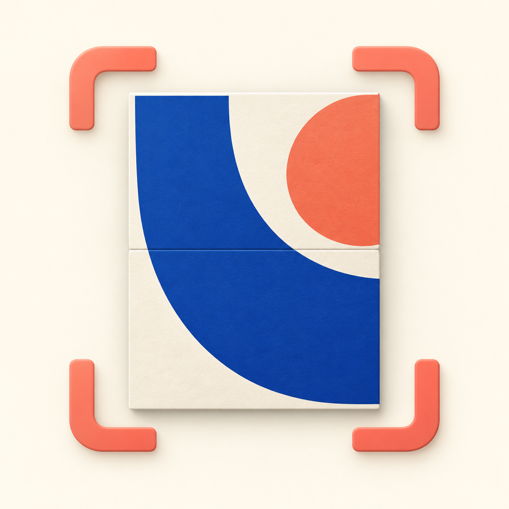

Capture
Start with the whole artwork, then add overlapping detail photos.

ArtrasARTRAS / ARTWORK SCANNER
Capture your artwork up close. Artras brings overlapping photos together into a detailed image, processed on your iPhone.
Preparing for a free release
Start with the whole artwork, then add overlapping detail photos.
Use the coverage map to see where more detail may be needed.
Stitch when you are ready. Add artwork information and export a PNG.